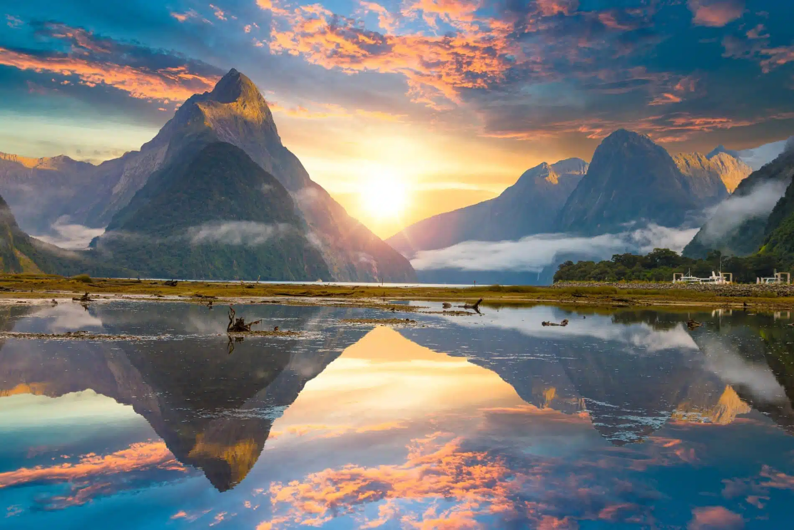

La Nouvelle-Zélande est un pays isoler composer de quelques îles remplis de vie. Il y a beaucoup à voir et faire, autant qu'il faudra prendre plusieurs voyages pour tout expériencer. Pour ce voyage en particulier nous allons concentrer sur l'île du sud.

Une première place à visiter est l'Île Ulva. C'est un sanctuaire pour une varieté d'oiseaux uniques tels que le kiwi, le manchôt à oeuil jaune et quelques espèces de perruches.
Une autre place incontournable du pays est Arrowtown et le village proche de Glenorchy. Ces villages pictoresque sont populaires pour leur apparences dans les filmes de Le Seigneur des Anneaux (Lord of the Rings).
Finalement, pour completer ta liste de destinations il faut visiter le château Larnach. Le château Larnach est le seul dans toute la nouvelle-Zélande et offre une expérience unique et plaisante.
parle de fruits de mer.... en production
parle d'agneau.... en production
parle de Hangi.... en production